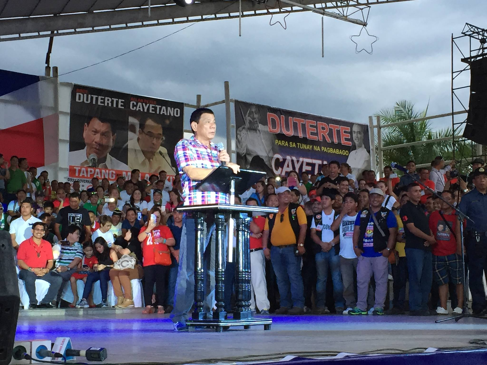
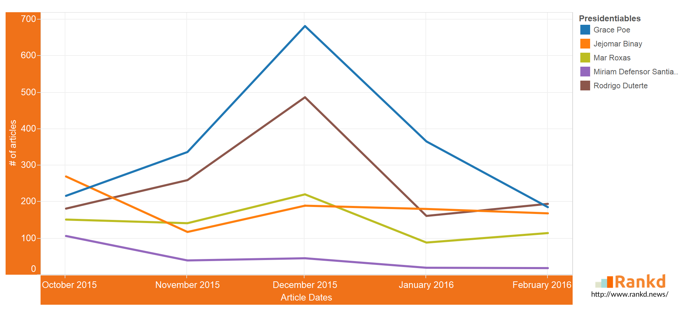
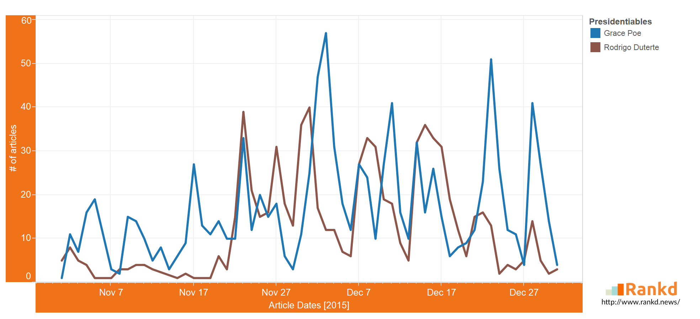

Can News Articles Help in Improving the Survey Performance of Presidential Candidates?
Februray 2016
Image grabbed from Rody Duterte Facebook page
The power of news online in elections should never be underestimated. In fact, it can even make or break a politician if issues being talked about online are not being handled properly. Good news is that given the data analytics technology, those articles where they are being mentioned can now be measured and analyzed more deeply.
Using Rankd™ data analytics, news articles from different sources (Inquirer, Philippine Star, Manila Bulletin), are collected, filtered and counted based on the number of mentions that the presidential candidate got. It is then plotted to compare other candidates, and how they fare over time, from September 27, 2015 up to Feb 14, 2016.
It was a tight battle for news supremacy for the last few days of September up until October for everyone vying for presidency. However, Grace Poe clearly emerged from the rest and became the most talked-about presidential candidate starting November as her series of disqualification cases due to questions about her citizenship was the headline of all news sources for several days. From SET's decision to affirm her status to Comelec's decision disqualifying Poe in the presidential race, we can observe that these issues brought in the highest article counts seen in our record. Even though her foundling issue was an attempt to remove her from the competition, it certainly helped her in terms of news virality, which was carried on from December until February, with the ongoing series of oral arguments in the Supreme Court.
We can also observe how the `Duterte-serye` has certainly helped Duterte in his news virality in the last two months of 2015. He managed to catch up with Poe starting Nov 22, when he finally announced his candidacy and substituting Martin Dino. His news virality seemed to work its magic until the middle of December, with news about him cursing the pope to the sampalan & barilan taunt with Mar Roxas keeping everyone abuzz about this latest presidential aspirant joining the race. He regained his momentum after his kissing-spree in Pampanga, proclamation rally in Tondo, and resuming his word war with Roxas this February.
Administration bet Roxas can be seen as having the same uptick in news mentions that somehow mimicks Duterte's trend line, albeit in a lower amount of article counts. This is mainly due to them mocking each other, which helps boost both their virality from time to time.
Binay, on the other hand, was under the radar after being on top of the news over the series of corruption cases thrown against him. His stealth mode starting November up until the middle of January can be seen as a way of distancing himself from the negative issues surrounding him, and this `break` from the media was seen to benefit him after emerging as the top contender in the SWS Surveys in January and February 2016. His news virality picked up in the last few weeks as the blue ribbon committee held their last senate hearing, and Binay resumed his tirades against the administration at the start of the campaign season.